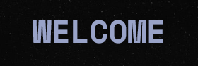

Merkurius (0,4 SA dari Matahari) adalah planet terdekat dari Matahari serta juga terkecil (0,055 massa bumi). Merkurius tidak memiliki satelit alami dan ciri geologisnya di samping kawah meteorid yang diketahui adalah lobed ridges atau rupes, kemungkinan terjadi karena pengerutan pada perioda awal sejarahnya.[38] Atmosfer Merkurius yang hampir bisa diabaikan terdiri dari atom-atom yang terlepas dari permukaannya karena semburan angin surya.[39] Besarnya inti besi dan tipisnya kerak Merkurius masih belum bisa dapat diterangkan. Menurut dugaan hipotesis lapisan luar planet ini terlepas setelah terjadi tabrakan raksasa, dan perkembangan ("akresi") penuhnya terhambat oleh energi awal Matahari.
Venus (0,7 SA dari Matahari) berukuran mirip bumi (0,815 massa bumi). Dan seperti bumi, planet ini memiliki selimut kulit silikat yang tebal dan berinti besi, atmosfernya juga tebal dan memiliki aktivitas geologi. Akan tetapi planet ini lebih kering dari bumi dan atmosfernya sembilan kali lebih padat dari bumi. Venus tidak memiliki satelit. Venus adalah planet terpanas dengan suhu permukaan mencapai 400 °C, kemungkinan besar disebabkan jumlah gas rumah kaca yang terkandung di dalam atmosfer.[42] Sejauh ini aktivitas geologis Venus belum dideteksi, tetapi karena planet ini tidak memiliki medan magnet yang bisa mencegah habisnya atmosfer, diduga sumber atmosfer Venus berasal dari gunung berapi.
Bumi (1 SA dari Matahari) adalah planet bagian dalam yang terbesar dan terpadat, satu-satunya yang diketahui memiliki aktivitas geologi dan satu-satunya planet yang diketahui memiliki mahluk hidup. 70% bagian bumi ditutup oleh air sedangkan 30%bumi ditutupi oleh daratan. Hidrosfernya yang cair adalah khas di antara planet-planet kebumian dan juga merupakan satu-satunya planet yang diamati memiliki lempeng tektonik. Atmosfer bumi sangat berbeda dibandingkan planet-planet lainnya, karena dipengaruhi oleh keberadaan mahluk hidup yang menghasilkan 21% oksigen. Bumi memiliki satu satelit, bulan, satu-satunya satelit besar dari planet kebumian di dalam Tata Surya.
Mars (1,5 SA dari Matahari) berukuran lebih kecil dari bumi dan Venus (0,107 massa bumi). Planet ini memiliki atmosfer tipis yang kandungan utamanya adalah karbon dioksida. Permukaan Mars yang dipenuhi gunung berapi raksasa seperti Olympus Mons dan lembah retakan seperti Valles marineris, menunjukan aktivitas geologis yang terus terjadi sampai baru belakangan ini. Warna merahnya berasal dari warna karat tanahnya yang kaya besi. Mars mempunyai dua satelit alami kecil (Deimos dan Fobos) yang diduga merupakan asteroid yang terjebak gravitasi Mars.